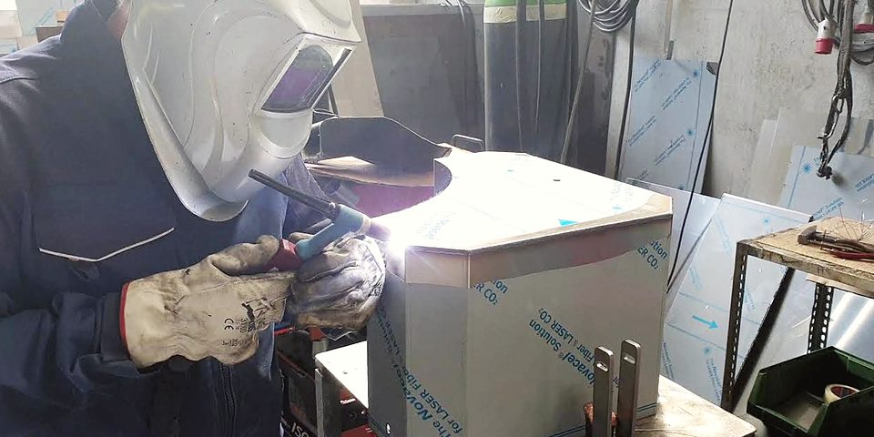
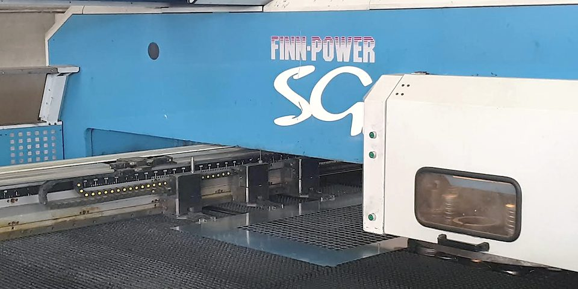
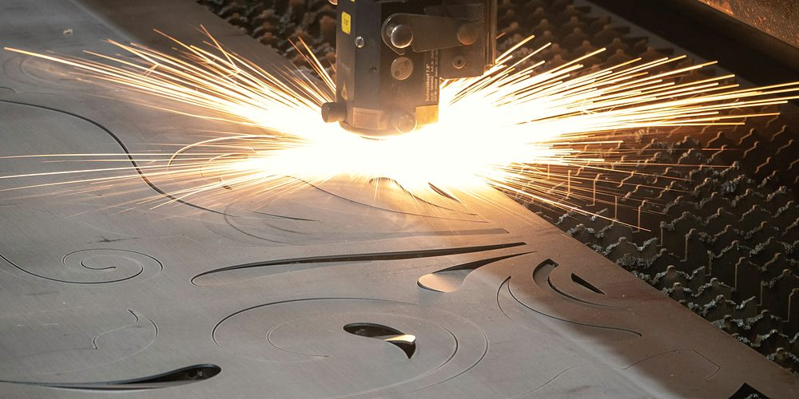
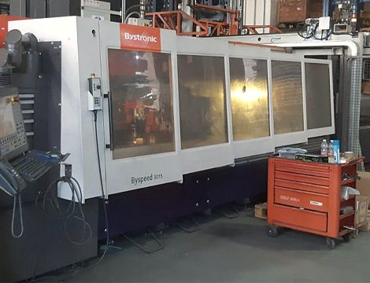
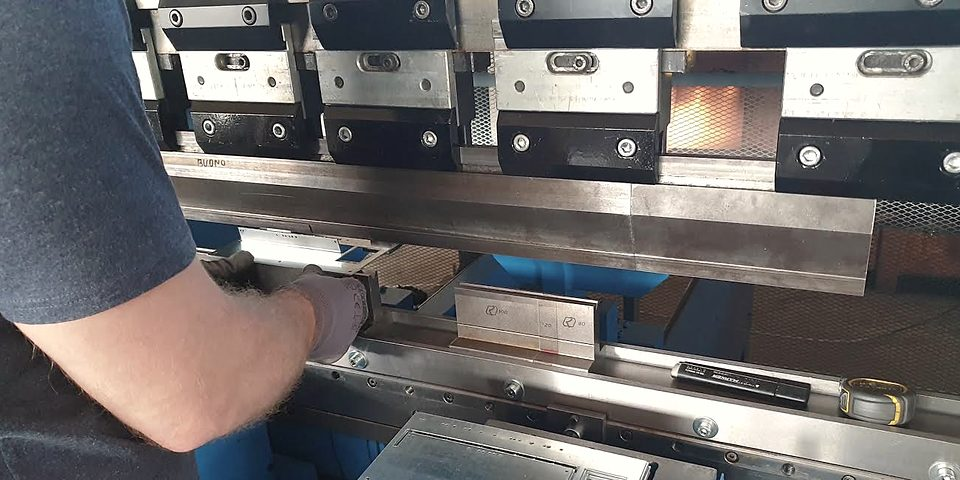
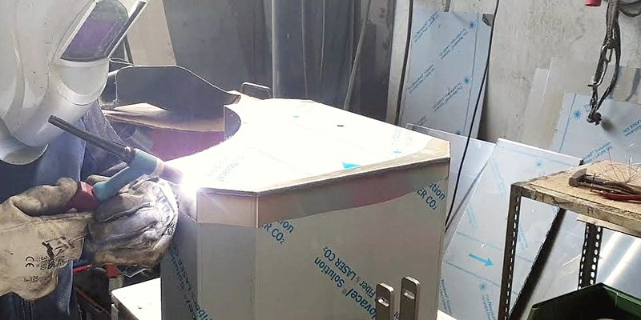
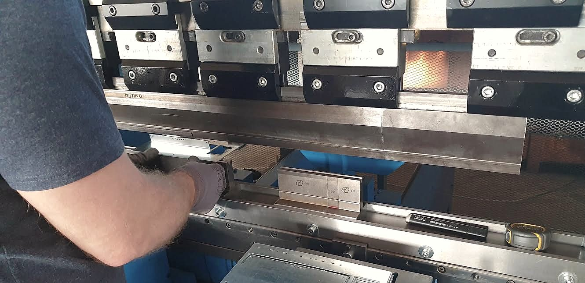
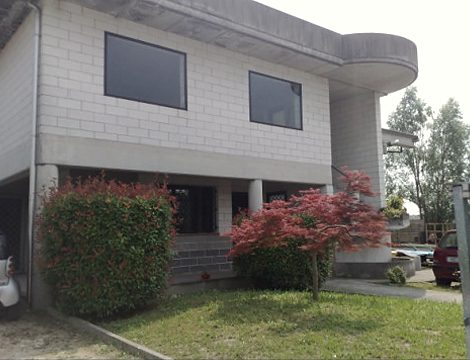
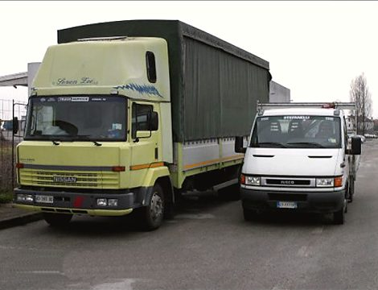

Tagliamo, pieghiamo e saldiamo a Tombelle

Carpenteria in lamiera conto terzi a Vigonovo, tra Padova e Venezia. La famiglia Volpato lavora il ferro dal 1978.
Saldatura TIG su un cassone inox, col film protettivo ancora addosso. Officina Tek.Lam, Tombelle.
La cornice ha le proporzioni del foglio intero, 3000 × 1500 mm: il campo di lavoro del nostro laser e della punzonatrice.
Le lavorazioni, sotto lo stesso tetto
Il foglio passa da una macchina all’altra nello stesso capannone. Verniciatura e cromatura le coordiniamo noi, su impianti esterni collegati.

Finn-Power SG6, punzonatura e cesoia angolare
Punzona e cesoia nella stessa macchina, con carico, scarico, impilaggio e separazione automatici: il pezzo esce già staccato dal foglio. Per i tagli dritti c’è anche la cesoia Gasparini.
- Asse X
- 3000 mm
- Asse Y
- 1500 mm
- Cesoia Gasparini
- fino a 3000 mm di lunghezza

Foto indicativaTaglio laser
Un Bystronic Byspeed da 4400 W taglia ferro, inox e alluminio. Carico e scarico sono automatici, con un dispositivo antigraffio per le lamiere che non devono segnarsi.
- Potenza
- 4400 W
- Campo di lavoro
- 3000 × 1500 mm
- Materiali
- ferro, inox, alluminio


Due piegatrici a controllo numerico
Una Finn-Power a 8 assi con bombatura Wila e una Warcom con bombatura idraulica, tutte e due con 3100 mm di lunghezza utile.
- Lunghezza utile
- 3100 mm
- Assi
- fino a 8
- Bombatura
- Wila, idraulica

Saldatura MIG e TIG, poi l’assemblaggio
Su ferro, inox e alluminio. Il pezzo può uscire già montato, pronto per la verniciatura o la cromatura.
- Procedimenti
- MIG, TIG
- Materiali
- ferro, inox, alluminio
- Finiture
- verniciatura e cromatura su impianti esterni collegati
Tubi e profili
Taglio automatico con la troncatrice OMES, curvatura con la Pedrazzoli idraulica, calandratura dei tubolari di piccola sezione con la Ercolina a controllo numerico. Sopra, ingrandite, le sezioni più grandi che curviamo.
- Taglio
- fino a 120 mm, barre fino a 2000 mm
- Curvatura
- quadro 20 × 20 × 3, tondo Ø 32 × 2,2
- Calandratura
- tubolari di piccola sezione

Per chi lavoriamo
Pezzi su disegno del cliente, anche già assemblati.
- Elettromedicale ed elettronicaCase metallici per apparecchi
- Arredo medicale e odontoiatricoCassetti e mobili in lamiera verniciata
- Refrigerazione commercialeTelai in tubolare per banchi frigo
- Trattamento aria e fluidiPannelli per cabine
- Macchine agricole e movimento terraGriglie e particolari in lamiera
- Carpenteria leggeraPer qualsiasi settore meccanico
La famiglia Volpato, dal 1978
- 1978FDS Volpato S.n.c.
- 2020Tek.Lam S.r.l.
- oggiVia del Lavoro 68, Tombelle
Il lavoro comincia nel 1978 con la FDS Volpato, una carpenteria di piccoli manufatti in ferro battuto. Nel 2020 la società passa il testimone a Tek.Lam S.r.l., che resta della famiglia.
Seguiamo il pezzo dall’idea alla consegna: l’ufficio tecnico lo disegna in 3D insieme al cliente, l’officina lo taglia, lo piega e lo salda, i nostri due autocarri lo portano a destinazione.
- Sandro VolpatoUfficio tecnicosandro@teklam.it
- Dimitri VolpatoCommercialedimitri@teklam.it
Mandaci il disegno
Per un preventivo scrivi all’ufficio tecnico con il disegno, il materiale e le quantità, oppure chiamaci.
Scrivere
ufftec@teklam.itUfficio tecnico
- Commerciale
- commerciale@teklam.it
- Informazioni
- info@teklam.it
Venire
Via del Lavoro 68
Zona artigianale Tombelle
30030 Vigonovo (VE)
Vicino al casello Padova Interporto dell’A13. Apri la mappa


Il pezzo finito parte da qui con mezzi nostri.
- 50 q di portataautocarro centinato
- 35 q complessiviautocarro con gru